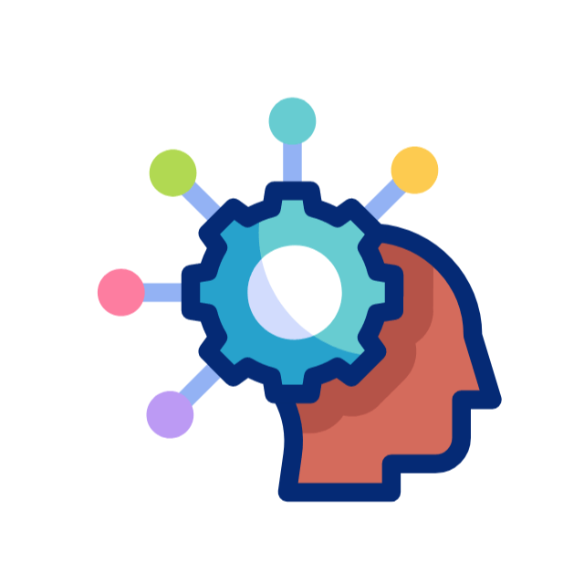

"Una persona puede causar mal a otros no solo por sus acciones, sino también por su
inacción. En cualquier caso, es justamente responsable ante ellos por el daño" - John Stuart
Mill
Universidad Mariano Gálvez de Guatemala
Ingeniería en Sistemas de la Información y Ciencias de la Computación
Ética Profesional
Lic. Walter Rodolfo Barrios Puac
Catedrático
José Everildo Pacheco Tzaj
2290 21 2324
Josué David Mínchez Monzón
2290 21 18482
Johny David Chiroy Guarcax
2290 21 12939
Miguel Amilcar Mejía
2290 21 2294
Victor Tuch Gonzalez
2290 20 6260
 Moral
Moral
La moral se refiere a un conjunto de normas, principios y valores que cada individuo o sociedad adopta
para determinar lo que considera correcto o incorrecto, bueno o malo en el comportamiento humano.
Características
- Varía de acuerdo con la cultura, la religión, la educación y la sociedad.
- Se basa en costumbres y tradiciones que regulan la conducta de las personas en un grupo específico.
- Es una guía de comportamiento que influye en cómo actuamos en la vida cotidiana.
Ética
La ética es el estudio racional de la moral, o el análisis filosófico de lo que debería ser considerado
correcto o incorrecto. Es un conjunto de principios que orientan el comportamiento humano en función de
la reflexión crítica sobre lo que es justo, bueno o adecuado.
Características
- Se enfoca en los fundamentos racionales que explican por qué ciertas acciones son valoradas como
buenas o malas.
- Es una disciplina filosófica que busca entender, justificar y aplicar principios morales.
- A diferencia de la moral, la ética no depende de una cultura específica, sino de una búsqueda
universal de principios de conducta.
Decálogo del Ingeniero en Sistemas
Responsabilidad Social
Actúa siempre en beneficio de la sociedad, buscando el desarrollo y bienestar de la comunidad a
través de tus habilidades y conocimientos.
 Respeto por el Usuario
Respeto por el Usuario
Diseña y desarrolla sistemas informáticos teniendo en cuenta las necesidades, la privacidad y la
seguridad de los usuarios.
 Compromiso con la Calidad
Compromiso con la Calidad
Mantén un alto nivel de calidad en cada proyecto o tarea que realices, asegurando la eficiencia y
efectividad de los sistemas y soluciones que implementes.
 Innovación y Creatividad
Innovación y Creatividad
Fomenta la innovación y el pensamiento creativo para resolver problemas, adaptarte a nuevos desafíos
y mejorar continuamente tus habilidades y conocimientos.
 Confidencialidad
Confidencialidad
Respeta la confidencialidad de la información con la que trabajas, protegiendo la privacidad de los
datos y asegurando que se utilicen de manera ética y responsable.
 Integridad Profesional
Integridad Profesional
Sé honesto y transparente en todas tus acciones y decisiones, evitando conflictos de intereses y
prácticas deshonestas.
Actualización Constante
Comprométete con el aprendizaje continuo y la actualización de conocimientos en tecnologías
emergentes, métodos y herramientas.
 Trabajo en Equipo
Trabajo en Equipo
Colabora y fomenta el respeto mutuo en el trabajo en equipo, reconociendo la importancia de la
colaboración interdisciplinaria para lograr resultados óptimos.
Respeto a la Propiedad Intelectual
Respeta la propiedad intelectual de los demás, no copiando ni plagiando código, diseños o ideas sin
el debido reconocimiento o permiso.
Responsabilidad Ambiental
Utiliza la tecnología de manera consciente, considerando el impacto ambiental y promoviendo
prácticas sostenibles dentro de la industria.
Temario
Comunicación
Facilita el entendimiento, la cooperación y la resolución de problemas en
todos los aspectos de la vida humana.
Comprender a las Personas
Es crucial para fortalecer las relaciones, fomentar la empatía y resolver
conflictos de manera efectiva.
Motivar a las Personas

Es clave para impulsar su rendimiento, fomentar el crecimiento personal y
alcanzar metas colectivas con entusiasmo y compromiso.
Justicia
Es fundamental para garantizar la equidad, proteger los derechos de las
personas y mantener la armonía en la sociedad.
Crítica

Impulsa la reflexión, el aprendizaje y la
mejora continua, al ofrecer perspectivas constructivas sobre ideas o acciones.
Perdón

Es esencial para liberar resentimientos, promover la paz interior y sanar
relaciones, facilitando el crecimiento personal y emocional.
Confiar en Dios

Brinda esperanza, fortaleza y paz, permitiendo enfrentar los desafíos con fe
y propósito.
Integridad

refleja honestidad y coherencia en las acciones, fomentando la confianza y el
respeto en las relaciones personales y profesionales.
Empoderamiento

Permite a las personas tomar control de sus vidas, desarrollar su potencial y
contribuir de manera significativa a su entorno.
Video relacionado
Haz clic en la imagen para ver los videos